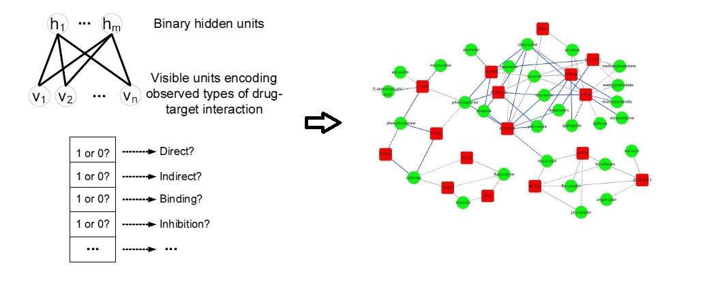
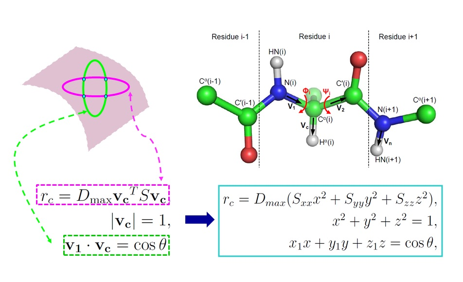
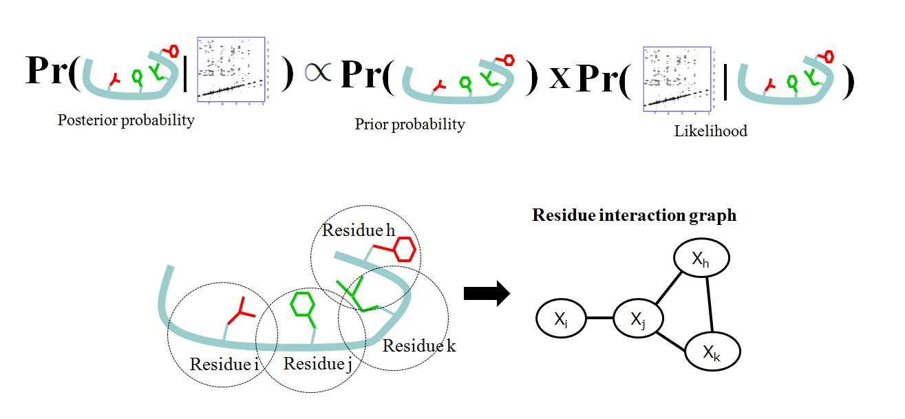
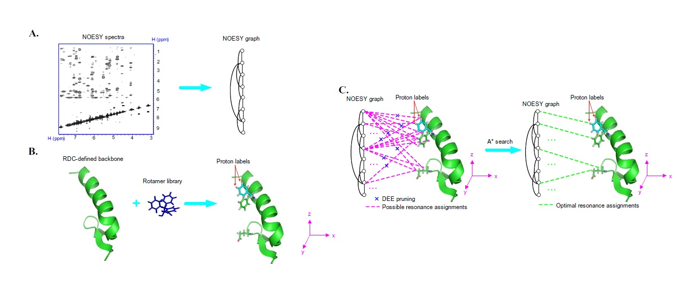
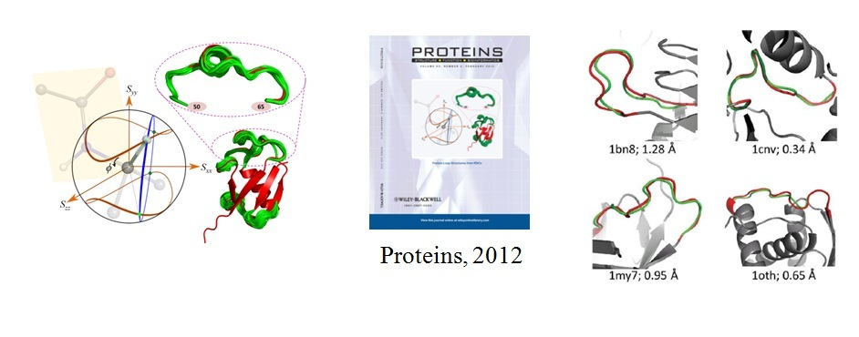
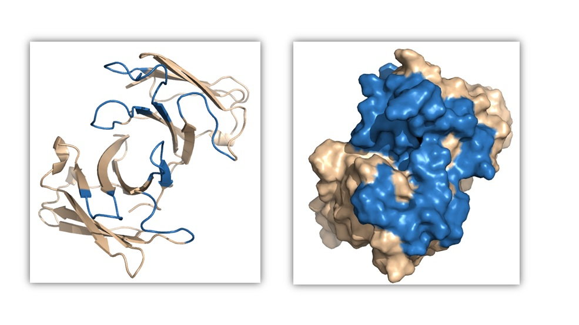
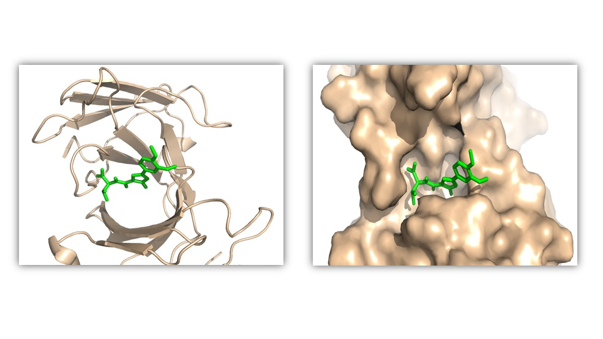

Machine Learning and Computational Biology Group
Toggle navigation
Home
People
Publications
Software
Openings

Predicting Drug-Target Interactions Using Restricted Boltzmann Machines

RDC-Based Backbone Structure Determination
FF Domain 2 of Human Transcription Elongation Factor 150 (PDB ID: 2KIQ)

Bayesian Approach for Side-Chain Resonance Assignment

Automated Protein Side-Chain Resonance Assignment and NOE Assignment

RDC-Based Loop Structure Determination

Antibody Structure Modeling

Prediction of Antibody-Ligand Interactions
Welcome to our group!
Our research interests lie in machine learning, bioinformatics, computational biology, data analysis and their intersections. Our group is part of the
Institute for Interdisciplinary Information Sciences (IIIS)
at
Tsinghua University
. IIIS is founded and headed by
Prof. Andew Yao
.
News
We are recruiting new students